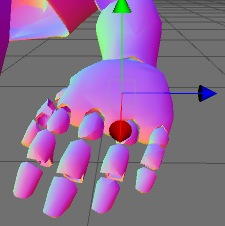

Previous
Previous
This tutorial will teach you how to write custom vertex and fragment programs in Unity shaders. For a basic introduction to ShaderLab see the Getting Started tutorial.
Lets start with a small recap of the general structure of a shader:
Shader "MyShaderName" {
Properties {
// ... properties here ...
}
SubShader {
// ... subshader for graphics hardware A ...
Pass {
// ... pass commands ...
}
// ... more passes if needed ...
}
SubShader {
// ... subshader for graphics hardware B ...
}
// ... Optional fallback ...
FallBack " VertexLit", 1
}
Here at the end we introduce a new command:
FallBack " VertexLit", 1
The Fallback command can be used at the end of the shader; it tells which shader should be used if no SubShaders from the current shader can run on user's graphics hardware. The effect is the same as including all SubShaders from the fallback shader at the end. For example, if you were to write a bump-mapped shader, then instead of writing a very basic non-bump-mapped subshader for old graphics cards you can just fallback to builtin VertexLit shader.
The basic building blocks of the shader are introduced in the first shader tutorial while the full documentation of Properties, SubShaders and Passes is in the reference.
A quick way of building subshaders is to use passes defined in other shaders. The command UsePass does just that, so you can reuse shader code in a neat fashion. As an example the following command uses the pass with the name "BASE" from the builtin Glossy shader:
UsePass " Glossy/BASE"
In order for UsePass to work, a name must be given to the pass one wishes to use. The Name command inside the pass gives it a name:
Name "MyPassName"
Vertex and fragment programs
We described a pass that used just a single texture combine instruction in the first tutorial. Now it is time to demonstrate how we can use vertex and fragment programs in our pass.
When you use vertex and fragment programs (the so called "programmable pipeline"), most of the hardcoded functionality ("fixed function pipeline") in the graphics hardware is switched off. For example, using a vertex program turns off standard OpenGL transformations, lighting and texture coordinate generation completely. Similarly, using a fragment program replaces any texture combine modes defined in SetTexture commands; so you can as well just write empty SetTexture commands just to set the used textures:
SetTexture [_MainTex] {}
Writing vertex/fragment programs requires a thorough knowledge of 3D transformations, lighting and coordinate spaces - because you have to rewrite the fixed functionality that is built into OpenGL yourself. On the other hand, you can do much more than what's built in!
Using Cg in ShaderLab
Shaders in ShaderLab are usually written in Cg programming language by embedding "Cg snippets" in the shader text. Cg snippets are compiled into low-level shader assembly by the Unity editor, and the final shader that is included in your game's data files only contains this low-level assembly. When you select a shader in the Project View, the Inspector shows shader text after Cg compilation, which might help as a debugging aid. Note that because Cg code is compiled by the editor, you can't create Cg shaders from scripts at runtime.
In general, Cg snippets are placed inside Pass blocks. They look like this:
Pass {
// ... the usual pass state setup ...
CGPROGRAM
// compilation directives for this snippet, e.g.:
// profiles arbfp1
// vertex vert
// fragment frag
// the Cg code itself
ENDCG
// ... the rest of pass setup ...
}
The following example demonstrates a complete shader with Cg programs that renders object normals as colors:
Shader "Tutorial/Display Normals" {
SubShader {
Pass {
CGPROGRAM
// profiles arbfp1
// vertex vert
// fragment frag
// fragmentoption ARB_fog_exp2
#include "UnityCG.cginc"
struct v2f {
V2F_POS_FOG;
float3 color : COLOR0;
};
v2f vert (appdata_base v)
{
v2f o;
PositionFog( v.vertex, o.pos, o.fog );
o.color = v.normal * 0.5 + 0.5;
return o;
}
half4 frag (v2f i) : COLOR
{
return half4( i.color, 1 );
}
ENDCG
}
}
Fallback " VertexLit", 1
}
When applied on an object it will result in an image like this (if your graphics card supports vertex& fragment programs of course):

Our "Display Normals" shader does not have any properties, contains a single SubShader with a single Pass that is empty except for the Cg code. Finally, a fallback to the builtin VertexLit shader is defined. Let's dissect the Cg code part by part:
CGPROGRAM // profiles arbfp1 // vertex vert // fragment frag // fragmentoption ARB_fog_exp2
// ... snip ... ENDCG
The whole Cg snippet is written between CGPROGRAM and ENDCG keywords. At the start compilation directives are given as a special form of comments:
- // profiles name indicates which hardware profile to compile to, arbfp1 being the OpenGL ARB vertex and fragment programs.
- // vertex name tells that the code contains a vertex program in the given function (vert here).
- // fragment name tells that the code contains a fragment program in the given function (frag here).
- // fragmentoption name adds an option to the compiled fragment program. Here we add support for exponential squared fog.
Following the compilation directives is just plain Cg code. We start by including a builtin Cg file:
#include "UnityCg.cginc"
The UnityCg.cginc file contains commonly used declarations and functions so that the shaders can be kept smaller. The file itself is found inside Unity application: Unity.app/Contents/CGIncludes/UnityCG.cginc. Here we'll use appdata_base structure, V2F_POS_FOG macro and PositionFog helper function from that file. We could just define them directly in the shader and not include the file of course.
Next we define a "vertex to fragment" structure (here named v2f) - what information is passed from the vertex to the fragment program. We pass the standard position and fog parameters and a float3 color parameter. The color will be computed in the vertex program and just output in the fragment program.
We proceed by defining the vertex program - vert function. Here we compute position and fog in the standard way (using helper function from UnityCG.cginc) and output input normal as a color:
o.color = v.normal * 0.5 + 0.5;
Normal components are in -1..1 range, while colors are in 0..1 range, so we scale and bias the normal in the code above. Next we define a fragment program - frag function that just outputs the calculated color and 1 as the alpha component:
half4 frag (v2f i) : COLOR
{
return half4( i.color, 1 );
}
That's it, our shader is finished! Even this simple shader is very useful to visualize mesh normals.
Of course, this shader does not respond to lights at all, and that's where things get a bit more complicated; read on Render Pipeline and Light Attenuation pages in the reference for details.
Using shader properties in Cg code
When you define properties in the shader, you give them a name like _Color or _MainTex. To use them in Cg you just have to define a variable of a matching name and type. Unity will automatically set Cg variables that have names matching with shader properties.
Here is a complete shader that displays a texture modulated by a color. Of course, you could easily do the same in a texture combiner call, but the point here is just to show how to use properties in Cg:
Shader "Tutorial/Textured Colored" {
Properties {
_Color ("Main Color", Color) = (1,1,1,0.5)
_MainTex ("Texture", 2D) = "white" { }
}
SubShader {
Pass {
CGPROGRAM
// profiles arbfp1
// vertex vert
// fragment frag
// fragmentoption ARB_fog_exp2
#include "UnityCG.cginc"
float4 _Color;
sampler2D _MainTex : register(s0);
struct v2f {
V2F_POS_FOG;
float2 uv : TEXCOORD0;
};
v2f vert (appdata_base v)
{
v2f o;
PositionFog( v.vertex, o.pos, o.fog );
o.uv = TRANSFORM_UV(0);
return o;
}
half4 frag (v2f i) : COLOR
{
half4 texcol = tex2D( _MainTex, i.uv );
return texcol * _Color;
}
ENDCG
SetTexture [_MainTex] {}
}
}
Fallback " VertexLit", 1
}
The structure of this shader is the same as in the previous example. Here we define two properties, namely _Color and _MainTex. Inside Cg code we define corresponding variables:
float4 _Color;
sampler2D _MainTex : register(s0);
Property types in ShaderLab map to Cg variable types this way:
- Color and Vector properties map to float4 variables
- Range and Float properties map to float variables
- Texture properties map to sampler2D variables for regular (2D) textures. CUBE and RECT textures map to samplerCUBE and samplerRECT variables respectively.
Note that in the case of a texture property we explicitly bind it to the first sampler register: register(s0). This is to ensure that Cg will use the correct texture; sampler registers should match the order of SetTexture commands later.
The vertex and fragment programs here don't do anything fancy; vertex program uses the TRANSFORM_UV macro from UnityCG.cginc to make sure texture scale&offset is applied correctly, and fragment program just samples the texture and multiplies by the color property.
After the Cg snippet we write an empty SetTexture command:
SetTexture [_MainTex] {}
This actually sets the texture _MainTex from the properties. If you'd have more textures, you'd need to write similar SetTexture commands in the order that matches sampler register declarations (see paragraph about register(s0) above).
Summary
We have shown how custom shader programs can be generated in a few easy steps. While the examples shown here are very simple, there's nothing preventing you to write arbitrarily complex shader programs! This can help you to take the full advantage of Unity and achieve optimal rendering results.
We have a forum for shaders at forum.unity3d.com so go there to get help with your shaders! There you can also find the source of all Unity builtin shaders - to examine and learn from. The complete ShaderLab reference manual is here. Happy programming, and enjoy the power of Unity and Shaderlab.